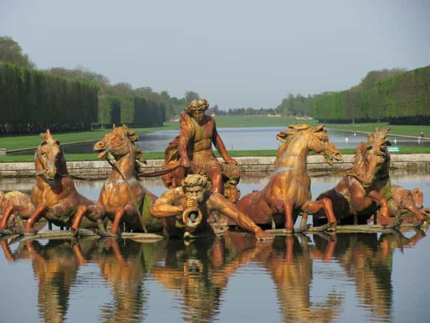
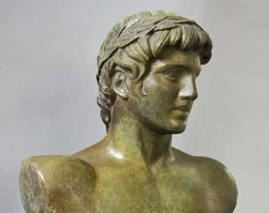
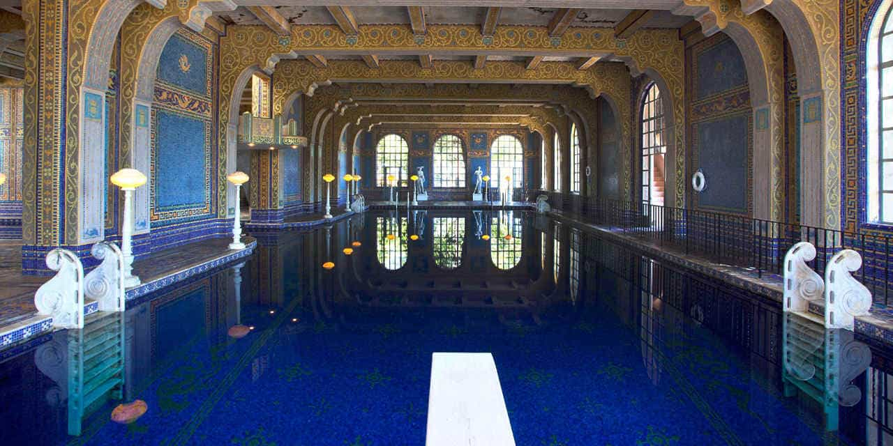

Return of Kings has taken an interest in Western civilization and looked into both history and spirituality, including Greco-Roman culture, which in spite of all its flaws and various (mis)interpretations, provides a rich source of inspiration for art, symbols and ethics. Although one may have a penchant for particular gods, such as Zeus or Hermes, there is no need to limit oneself to a single symbol or deity.
Another Greek god of particular relevance is Apollo, since he is linked to Apollonian “high culture” and as such opposed to the Dionysian “low culture” (hedonism). In this article I will give an overview of Apollo and how he has been depicted throughout history, as well as to explain how one can live a more “Apollonian life”.
Apollo in Western history
As Julius Evola notes in his book Ride The Tiger and Umberto Eco in On Beauty, the depictions of the Greek gods Apollo and Dionysus as opposing elements are simplified, even wrong or misguided. For instance, scholars specialized in this topic emphasize that Apollo himself is related to opposing elements:
Apollo is linked with both healing and destruction, especially sudden death inflicted from a distance; he is associated, Ferguson suggests, with the sun “which both scorches and gives life.
In Fritz Graf’s book Apollo, he stresses that in Homer’s Iliad Apollo shoots arrows into the Greek camp and as a consequence Agamemnon has to give in. Obviously he is not a nice and calm deity, but a god of sudden death. However, that is but one aspect – he has more than one string to his bow:
Apollo is generally associated by ancient writers and artists with one of two stringed instruments, the lyre or the bow; the first generates harmony, the other deals death. The god is linked also with phenomena as varied and diverse as plague, ritual purification, the herding of sheep, ecstatic prophecy, constitutional law, colonization, and healing. Perhaps in no other case is it so difficult to express in concrete terms the range of an Olympian god’s concerns and activities.
Such a multifaceted god and symbol can be linked to (traditional) Western civilization almost in full. As Richardo Duchesne notes in his work The Uniqueness of Western Civilization, historically the West has been both constructive and destructive, built and shattered its surroundings (and sometimes colonized foreign lands).


Another key feature is that Apollo represents the sun, which is one of the essential elements of life, an idea which has pre-Classic origins. Perhaps this idea is a bit misguided, since very few worshipped Apollo as a sun god in the ancient past, but it is still something that one tends to associate with this deity. Furthermore he is the slayer of evil, like the snake Python, and as such a pro-cosmic symbol.
Moreover, like Hermes, Apollo is also depicted as an archaic player, and have had mythological liaisons with Cassandra, Coronis, Daphne, and Sibyl (which he didn’t meet on Tinder, I suppose) to name a few. Apollo also had an Olympian twin sister, Artemis, whom likewise has been worshiped at different locations in the ancient Mediterranean, Delphi in particular.
During later historical periods, especially 19th-century German scholarship, Apollo has been linked to the orderly and often illustrated as a graceful statue during both Renaissance and neo-Classical periods. In that regard, some of the old representations meet the newer ones, and as much as Apollo is a bit ambiguous one tends to associate him with law, order, healing, and the solid forms of beauty which are found in European art, architecture, literature, music, and to some extent in modern fashion.
How to live an Apollonian life
Concrete examples on how to integrate Apollonian ideals into your life are to read, write, lift weights, eat healthy, dress well, and encourage classic, beautiful art and architecture, while boycotting its opposites.
Even more concretely, spend considerable time in beautiful buildings, gardens, and other sites, like for example churches, castles, museums, and libraries. The pursuits that you partake in and the environments where you choose to spend time in will affect you, and in this case in a positive way.
Start the day with a healthy breakfast, continue with lunch, and after a day of work you go to the gym. Read a good book afterwards, like The Brothers Karamazov in the evening, and on the weekend you will visit some of the sites mentioned above, with or without company. Personally I also like to visit a pretty spa once in a while and almost feel like a Roman.

In closing
As I see it, Apollo is the ideal which one should strive for, but in order to get there we may have to use more of the trade and trickery that are linked to the god Hermes. Hopefully we do not have to shoot our enemies with arrows like Apollo did. Our culture already has enough of degenerate music, pop culture, ugliness, incompetence and retarded social media. True beauty must heal it and it starts with you as a person.
For more of William Adams’ material, check out his website Syncretic Politics.
Read More: Why The Greek God Hermes Is A Perfect Symbol For Neomasculinity